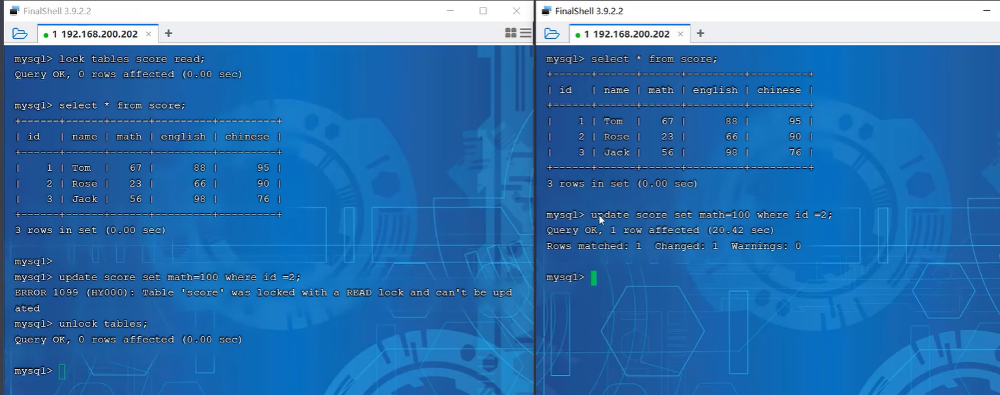
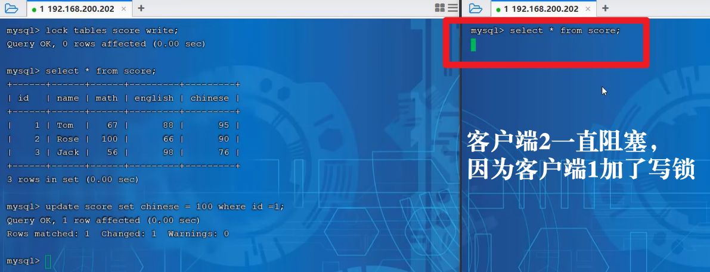

MySQL：（三）全局锁、表级锁、行级锁
MySQL中的锁，按照锁的粒度分，分为：
- 全局锁：锁定数据库中所有表
- 表级锁：每次操作锁整张表
- 行级锁：每次操作锁住对应行数据
一、全局锁
mysqldump相信大家都听说过，这是用来进行数据库备份的工具，除此以外也可以采用数据库主从复制机制进行数据库备份，这同时也是异地容灾、备份等内容。
数据库备份操作：
1 | # 加锁操作 |
这里附上一篇flush操作的博客，用的是博客中的第4条：MySQL flush命令详解-CSDN博客
FLUSH TABLES: 关闭所有表并清空表缓存（如查询缓存），或者指定特定表进行刷新。这对于解决锁问题、确保数据一致性或在没有重启MySQL服务的情况下应用表结构更改很有用。加上
WITH READ LOCK选项可以全局锁定所有表，以便进行安全的备份。
全局锁存在的问题：
1 | # 数据备份 |
加上这个参数以后，就是通过快照读而不加全局锁了，快照读在上一篇博客有介绍，可以戳链接看看：MySQL：MVCC与事务 | 颓废市民黄先生 (rengoku.top)
二、表级锁
1. 表锁
对于表锁，分为两类
- 表共享读锁（read lock）
- 表独占写锁（write lock）
1 | # 加锁 |
我相信看到这里大家肯定非常熟悉，其实表锁和读写锁很类似，都是读共享，写独占。
读的时候会阻塞写操作，例如DDL，DML，写的时候只能让拿到锁的客户端或者线程进行读写操作。
读写锁可以参考另外一篇博客：Java多线程：三、多线程锁、java锁的实现 | 颓废市民黄先生 (rengoku.top)
演示读锁：

首先左边的客户端1（线程1）对表score加了一个读锁，然后两个客户端做select操作，发现都是可以读出来的；客户端1（线程1）如果进行写操作（update）则会报错，客户端2（线程2）进行修改操作会阻塞。
通过演示得到的结论：读锁不会阻塞读操作，而会阻塞其他客户端的写操作。
演示写锁：

2. 元数据锁
简单来说，如果某一张表存在未提交的事务，那么元数据锁是不允许对表结构进行修改操作的。
下面我提出两个问题，需要重点理解：
（1）当进行DML操作的时候会添加MDL读锁，当进行DDL操作的时候添加MDL写锁，怎么理解这句话？
DML操作与MDL读锁
DML（Data Manipulation Language） 包括INSERT、UPDATE、DELETE等语句，这些语句用于修改数据库中的数据，但不涉及数据库结构的变更。当执行DML操作时，数据库需要访问表的元数据以了解表的结构（如列的类型、是否存在索引等），以便正确地执行数据修改。
为了保证在DML操作期间表的结构不会被其他事务修改（例如，通过DDL语句），数据库会对表的元数据加上一个MDL读锁。MDL读锁允许多个事务同时读取元数据，但阻止任何事务修改元数据。这样，DML操作可以安全地执行，因为它们知道在它们执行期间，表的结构是稳定的。
DDL操作与MDL写锁
DDL（Data Definition Language） 包括CREATE TABLE、ALTER TABLE、DROP TABLE等语句，这些语句用于定义或修改数据库的结构。由于DDL操作直接改变数据库的结构，因此它们需要更高的访问权限和更严格的并发控制。
当执行DDL操作时，数据库会对涉及的表的元数据加上一个MDL写锁。MDL写锁是排他的，意味着当一个事务持有表的MDL写锁时，其他任何事务（无论是想读取还是修改元数据）都必须等待该锁被释放。这种锁定机制确保了DDL操作的原子性和一致性，防止了在DDL操作执行期间表的结构被意外修改或访问。
“元数据”指的是描述数据的数据，它是关于数据本身的信息，包括但不限于数据的结构、属性、关系、存储位置、模型定义、生命周期等。
（2）如何理解兼容性？
- shared_read与shared_write的兼容性：在元数据锁的层面上，shared_read锁和shared_write锁是兼容的，因为它们都不涉及修改元数据。这意味着，当多个事务同时执行SELECT查询或DML操作时，它们可以并发地访问表的元数据。
- 与排他锁的互斥性：然而，无论是shared_read锁还是shared_write锁，都与DDL操作所需的MDL排他锁互斥。这是因为DDL操作需要修改表的元数据，而修改元数据时必须确保没有其他事务正在访问或修改该元数据。
3. 意向锁
假设线程1已经对某行数据加了行锁，现在线程2想要加一个表锁，那么线程2可以直接加锁吗？实际上是不行的，这样行锁和表锁会冲突，此时线程2需要对整个表进行逐行遍历，判断是否添加了行锁，没有行锁才能加表锁。这样一看，加表锁的的效率是不是十分的低？于是为了优化这个加锁的机制，现在引入了意向锁。
意向锁优化：如果线程A添加行锁的时候，添加的意向锁和接下来线程B添加的表锁是兼容的，那么线程B添加表锁成功，反之线程B添加处于阻塞。
线程A添加行锁的时候，可以添加意向锁。
这样在加共享锁时候会添加IS。
意向锁分为两类：意向共享锁（IS）和意向排他所（IX）。
意向共享锁：
如果线程A添加了行锁的时候添加了IS，那么线程B添加表锁的读锁可以添加成功，添加表锁的写锁失败
意向排它锁：
如果线程A添加了行锁的时候添加了XS，那么线程B添加表锁的读锁或者写锁都会失败。
三、行级锁
划重点：如果不走索引，那么行级锁就失效了
划重点：如果不走索引，那么行级锁就失效了
划重点：如果不走索引，那么行级锁就失效了
在RR的事务隔离级别下，MySQL InnoDB存储引擎默认使用的是临键锁（Next-Key Lock），但也会根据具体的查询条件和索引情况来决定是否退化为间隙锁（Gap Lock）或行锁（Record Lock）。
1. 行锁
InnoDB使用多种类型的行锁，包括共享锁（S锁）和排他锁（X锁）：
共享锁（S锁）：允许事务读取一行数据，但不允许其他事务修改它。共享锁不会阻止其他事务获取同一行的共享锁，但会阻止排他锁的获取。
什么叫阻止排他锁的获取？
当一个事务对数据库中的某个资源（如一行数据）加上了共享锁（Shared Lock）时，这个共享锁允许其他事务也对该资源加上共享锁进行读取操作，但会阻止其他事务对该资源加上排他锁（Exclusive Lock）进行写入或修改操作。
排他锁（X锁）：允许事务读取和修改一行数据，同时阻止其他事务获取该行的任何类型的锁。当事务需要修改一行数据时，它会尝试获取该行的排他锁。如果成功，其他事务将无法读取或修改该行，直到锁被释放。
可以看到，DML语句默认是会加上行锁的。刚刚在意向锁中也有介绍，后面两个方式会同时添加意向锁。
刚刚说了，不走索引的话行锁就失效，此时会自动升级为表锁
2. 间隙锁&临键锁
演示第一种情况：索引上的等值查询(唯一索引), 给不存在的记录加锁时,优化为间隙锁。
线程A使用begin开启事务以后，可以在线程B中的lock_data中可以看到8之前的数据被间隙锁锁上了（3-8，不包含3和8），此时在线程B执行插入操作是会被阻塞的：
如果线程A将事务commit后，线程B才能执行插入操作。
演示第二种情况：索引上的等值查询(普通索引)，向右遍历时最后一个值不满足查询需求时, next-key lock退化为间隙锁。
我们来慢慢分析这段话，现在这段话针对的是普通索引。普通索引不是唯一的，这个B+树的叶子结点形成的双向链表是可以有重复的节点的。
假设我们有一个表students，其中有一个非唯一普通索引age，表中的数据如下：
1 | +----+-----+ |
现在，我们执行一个等值查询，试图找到age为19的记录，但显然这样的记录不存在：
1 | BEGIN; -- 开始一个事务 |
在这个查询中，InnoDB会利用age索引来查找age为19的记录。由于索引是排序的，查询会向右遍历索引树，直到找到一个不满足查询条件（即age不等于19）的值为止。在这个例子中，查询会遍历到age为20的记录，因为20是第一个大于19的值。
加锁行为：
- 在遍历过程中：由于查询是等值查询，并且索引是非唯一的，InnoDB原本会为每个可能满足条件的记录（如果存在的话）加上next-key lock。但是，在这个例子中，没有记录满足条件。
- 当遍历到最后一个不满足条件的值时：在这个例子中，是
age为20的记录。由于查询没有找到任何满足条件的记录，InnoDB不会在这个记录上加上行锁（因为行锁是针对满足查询条件的记录的）。但是，为了防止其他事务在这个间隙（即age为18和20之间的间隙）中插入age为19的记录，InnoDB会在这个间隙上加上间隙锁。
结果：
因此，尽管查询没有找到任何满足条件的记录，但InnoDB仍然在age为18和20之间的间隙上加了间隙锁。这意味着，在这个事务提交之前，其他事务无法在这个间隙中插入age为19的记录，从而防止了幻读的发生。
这里存在的理解误区：
现在是基于age索引进行的，所以id走唯一索引不一样，现在的间隙锁锁住的是age=18和age=20之间的间隙，而非age=18或者age=20的哪条具体的记录。
情景三：索引上的范围查询(唯一索引)– 会访问到不满足条件的第一个值为止。
查询执行：当执行一个范围查询（如
SELECT * FROM table WHERE index_column BETWEEN value1 AND value2 FOR UPDATE;）时，InnoDB会利用索引来加速查询过程。锁定行为：
对于唯一索引，由于索引值是唯一的，因此查询会逐一访问索引中的记录，直到找到不满足条件的第一个值为止。
在这个过程中，InnoDB会为每个满足条件的记录加上临键锁。这意味着，它锁定了这些记录本身以及它们之前的间隙（实际上，对于唯一索引的最后一个满足条件的记录，它可能只锁定间隙部分，因为后面没有更多的记录来形成临键锁的行锁部分）。
当查询到达不满足条件的第一个值时，InnoDB会在这个值之前的间隙上加上间隙锁（如果之前还没有加上的话），但不会锁定这个值本身，因为它不满足查询条件。
防止幻读：通过这种方式，临键锁确保了即使在可重复读事务隔离级别下，其他事务也无法在查询范围内插入新的记录，从而防止了幻读的发生。